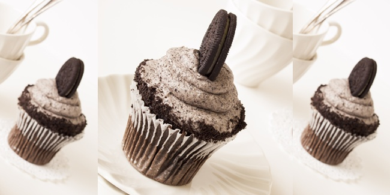

Resep Cupcake Oreo

Bahan-bahan:
- 100 gram tepung terigu
- 100 gram mentega
- 100 gram gula pasir
- 100 ml air hangat
- 3 butir telur ayam
- 2 sdt baking soda
- 50 gram bubuk cokelat
- 100 gram mentega
- 100 gram gula halus
- 2 sdt ekstrak vanila
- biskuit oreo
Langkah-langkah:
- Kocok 100 gram mentega dan juga gula sampai lembut.
- Tambahkan telur satu persatu sambil terus dikocok sampai tercampur rata.
- Tambahkan tepung, baking soda, 1 sdt ekstrak vanila dan bubuk cokelat.
- Kocok terus sampai adonan merata.
- Tuangkan adonan dalam cetakan muffin dan panggang selama 20 menit dalam oven dengan suhu 180 derajat celcius.
- Angkat dan dinginkan.
- Siapkan 100 gram mentega dalam mangkuk dan mixer sampai lembut.
- Tambahkan gula halus dan juga 1 sdt vanila.
- Kocok terus dengan kecepatan rendah sampai tercampur rata.
- Naikkan kecepatan mixer dan kocok selama 1-2 menit.
- Tuangkan 1 sdt krim di atas kue dan hiasi cupcake dengan oreo.